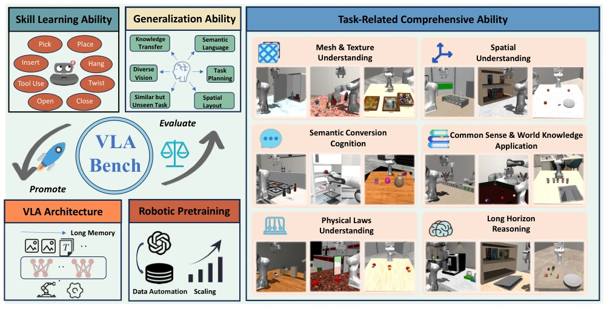
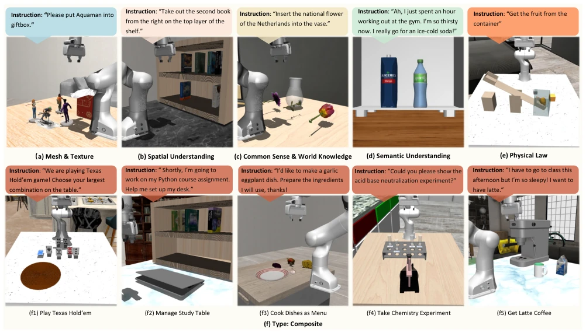
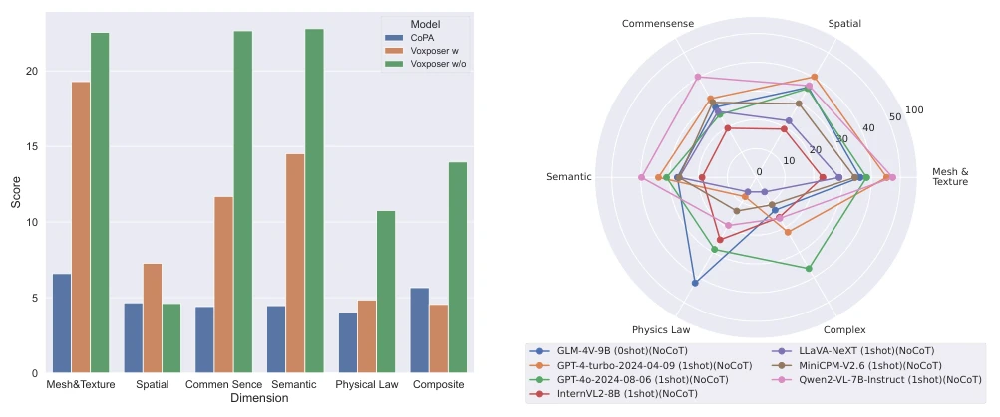
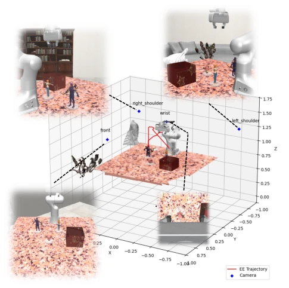
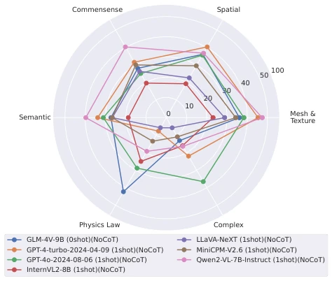
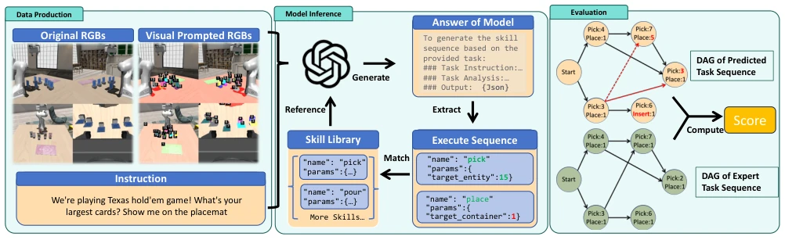
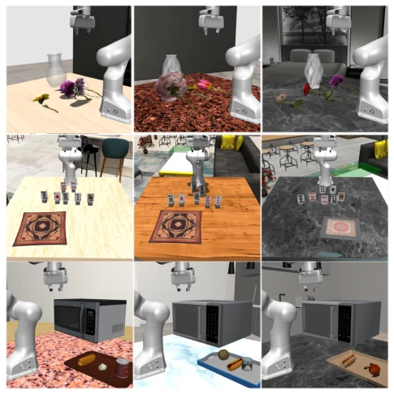
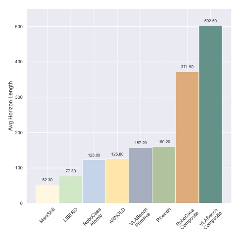
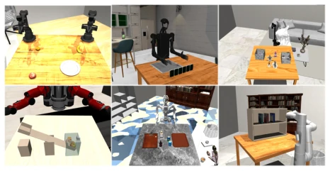
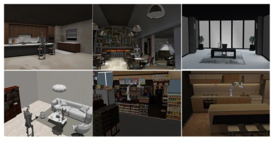

VLABench is like conducting a 'stress test' on current VLA models, results show that although they look impressive, in scenarios requiring common sense and long-horizon reasoning, they basically become a 'failure scenario'. Authors from Fudan University created a large library of 100 task classes and 2000+ objects, specifically testing tasks requiring 'cognitive reasoning', such as 'arranging Dutch tulips in a vase' which requires world knowledge. Although automated data generation is quite beneficial and saves manpower, the experimental results are somewhat disheartening: SOTA VLA and VLM remain weak in long-horizon planning, and the so-called 'emergent abilities' are not yet visible in the embodied domain. This benchmark pours cold water on the blind hype of VLA, but indeed fills the gap in long-horizon reasoning evaluation, informing researchers of the current deficiencies.
研究动机Motivation
现有的具身基准像 RLBench [24]、LIBERO [35] 大多关注技能学习，指令模板化严重，缺乏自然语言隐含意图的理解。比如 RT-2 [4] 里的‘把可乐给 Taylor Swift'，现有策略根本搞不定这种需要常识转移的任务。CoPA [22] 虽然涉及长程，但依赖提示工程，泛化性存疑。VLABench 旨在解决这些问题，强调常识、物理规律和长程推理，填补了 Foundation Model 在具身操作评测上的空白。现有工作往往在简单场景下刷分，无法评估模型在真实复杂环境下的泛化能力，导致研究界对 VLA 的实际能力产生误判。
Existing embodied benchmarks like RLBench [24], LIBERO [35] mostly focus on skill learning, instructions are heavily templated, lacking understanding of implicit intent in natural language. For example, 'give Coke to Taylor Swift' in RT-2 [4], existing strategies cannot handle this task requiring common sense transfer. CoPA [22] although involves long-horizon, relies on prompt engineering, generalization is questionable. VLABench aims to solve these problems, emphasizing common sense, physical laws, and long-horizon reasoning, filling the gap in Foundation Model embodied operation evaluation. Existing work often achieves high scores in simple scenarios, unable to evaluate model generalization in real complex environments, leading to misjudgment of VLA actual capabilities in the research community.

Figure 1. Overview of VLABench. VLABench is a large-scale language-conditioned manipulation benchmark to evaluate the compre- hensive skill learning and generalization ability of action policies especially pre-trained vision-language-action models.

Figure 3. Task examples in each dimension. The first row showcases examples of primitive tasks from Section 3.1, while the second row presents examples of composite tasks.
Overall based on MuJoCo simulation, constructed an asset library of 163 classes, 2164 objects, some AI-generated. Tasks divided into 60 primitives and 40 composite tasks, the latter average steps exceed 500. Data collection automated, using heuristic skill library + RRT planning + GPT-4 instruction generation. Evaluation divided into three parts: VLA fine-tuning generalization, Workflow zero-shot, VLM capability. VLM evaluation introduces DSL skill library, scoring through graph matching. Specific process includes: 1) Scene initialization and asset loading, supporting multi-camera perspectives; 2) Automated trajectory generation, utilizing prior information to plan paths, using SLERP interpolation smoothing; 3) Instruction enhancement, using GPT-4 to generate natural language descriptions, containing implicit intent; 4) Multimodal evaluation, test success rate for VLA, test skill sequence matching for VLM, introduce Progress Score to quantify task progress.

Figure 4. Evaluation results for Voxposer and CoPA. Voxposer w/o refers to the version without visual perception, where ground truth labels are directly provided for object selection. Voxposer w uses GPT-4V as the visual perception module.

Figure 7. Task observations. The figure illustrates an example data instance from the Select Toy task, including multi-camera po- sitions, multi-view RGB images, 3D point clouds, and the expert trajectory.
Tested Octo, OpenVLA, RDT-1B etc. VLA, performance poor on unseen objects and long-horizon tasks, OpenVLA relies on pre-trained VLM for some common sense capability, but skill learning is weak. In terms of Workflow, Voxposer and CoPA have high failure rates on complex reasoning. VLM evaluation shows, GPT-4o reasoning is passable, open-source models like Qwen2-VL even exceed GPT-4 in some dimensions, but overall still have limitations in embodied planning. Progress Score metric is finer than 0/1. Experiments show current architecture cannot support long-horizon tasks, Scaling Law in embodied field not yet fully effective, need more high-quality data and better architecture. Especially in long-horizon tasks, models prone to errors in intermediate steps, leading to final failure, indicating reasoning chain stability is still a bottleneck.

Figure 5. Radar charts depicting the performance of all VLM mod- els across six dimensions. The reason why only GLM-4V-9B is evaluated in a zero-shot setting is that it does not support multi- graph inference, which is required for the other models.

Figure 6. Evaluation pipeline for VLMs. Step 1: Sample the required four-view images, as well as those segmented with numerical information, from the simulation. Meanwhile, save the corresponding instructions and operation sequences. Step 2: Input the original and annotated images and the instructions into the model. Then, obtain the model’s output and extract the generated operation sequence. Step 3: The two operation sequences are evaluated using four metrics, which are weighted and summed to produce the final score.The red part represents the error output of the model, where the red solid arrows represent the dependencies generated by the error, and red dashed arrows represent the dependencies lost by the error.
其他图片Other Figures

Figure 8. Multi cases in the same task. Row 1: Insert Flower task from the left shoulder view. Row 2: Play Texas Hold’em task from the front view. Row 3: Heat Food with Microwave task from the right shoulder view. Examples in the same row originate from the same task but differ in task objectives, distracting objects, spatial configurations, spatial poses, etc.

Figure 9. Comparison of horizon length. VLABench signifi- cantly surpasses other benchmarks in terms of average task length and reasoning steps.

Figure 10. Cross embodiment. VLABench supports a wide range of different embodiments.

Figure 11. Diverse scenes. VLABench supports a wide range of different scenes.